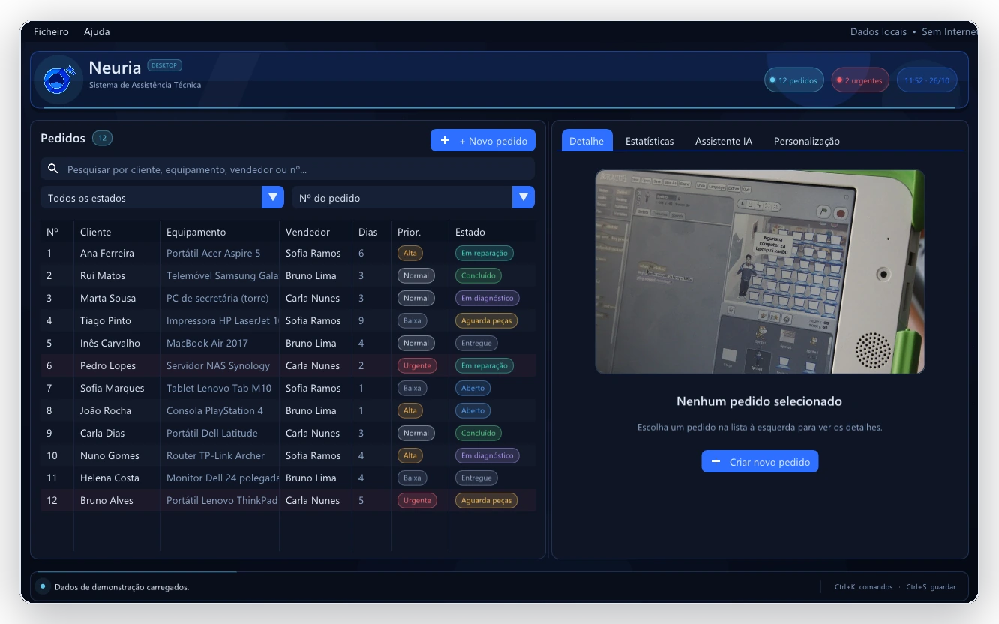

Pedidos sob controlo
Abra um pedido com cliente, equipamento, prioridade e técnico. Pesquise, filtre e ordene a fila para saber sempre quem está à espera do quê.
GESTÃO LOCAL PARA OFICINAS
Pedidos, diagnósticos, peças, horas e custos num só lugar. Uma aplicação nativa para Windows, rápida e privada — com um assistente de IA local que sugere, mas nunca decide por si.
Windows 10/11 2,63 MB 100% local

Cada ecrã resolve uma parte do dia: abrir o pedido, diagnosticar, somar peças e horas, fechar e perceber o que aconteceu. Tudo no mesmo sítio, sem duplicar informação.
Abra um pedido com cliente, equipamento, prioridade e técnico. Pesquise, filtre e ordene a fila para saber sempre quem está à espera do quê.
Registe a avaria, as intervenções, as peças e o tempo de mão de obra. O custo acompanha o trabalho — sem contas de cabeça no fim do dia.
Receita, urgentes por resolver, custo médio e tempo médio de resolução. Compare vendedores e veja a evolução dos últimos 14 dias.
Um modelo GGUF opcional, carregado no seu computador, pode sugerir um diagnóstico ou uma mensagem ao cliente. A confirmação é sempre do técnico.
Também incluído: paleta de comandos Ctrl+K, exportação CSV, quatro temas e duas densidades.
Três vistas, uma lógica consistente. Percorra a aplicação como a usaria ao balcão — cada imagem é uma janela real da versão 1.0.
Prioridade, estado, cliente e técnico sempre visíveis. A fila pode ser pesquisada, filtrada e ordenada.
Diagnóstico, intervenções, peças e horas no mesmo painel — com o custo a atualizar à medida que trabalha.
Receita, tempo médio e desempenho por vendedor, com a evolução dos últimos 14 dias e a distribuição por estado.
O assistente é opcional e funciona inteiramente no seu computador. Carrega um modelo GGUF com llama.cpp, corre na CPU e não precisa de internet.
O modelo não está incluído. A aplicação funciona por completo sem ele; o assistente só fica disponível depois de adicionar um GGUF.
Descarregue, extraia e abra. Sem instalação, conta ou ligação à internet.
Sem instalação. Se o Windows mostrar um aviso, escolha Mais informações Executar mesmo assim.
Código-fonte
AFA83130BBCF055E44F406D76E906F863B3BE4D369D4A995A3A30C089C3D3E00
Instalação, dados locais e o assistente de IA: o essencial, sem letras pequenas.
A documentação técnica completa segue no README dentro de cada .zip.
Não. A aplicação é portátil: descarregue o .zip, extraia para uma pasta e execute assistencia.exe. Não há instalador, serviços ou dependências externas.
Sim. Pedidos, estatísticas, filtros e exportação funcionam offline. Só precisa de internet se quiser descarregar um modelo GGUF para o assistente — depois o modelo também corre localmente.
Não. O ficheiro do modelo não é distribuído com a aplicação. O assistente é opcional e usa um modelo GGUF que o utilizador coloca na pasta indicada. As instruções estão no README incluído no .zip.
Em ficheiros locais, junto à aplicação: assistencia_dados.dat para os pedidos e assistencia.cfg para preferências como tema, densidade e taxa horária. Nada é enviado para servidores.